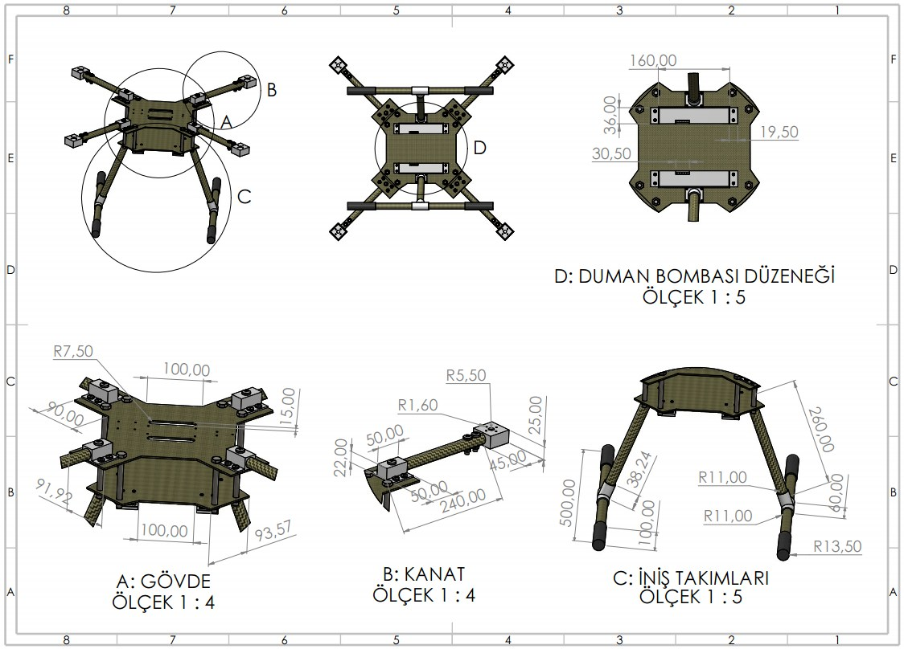
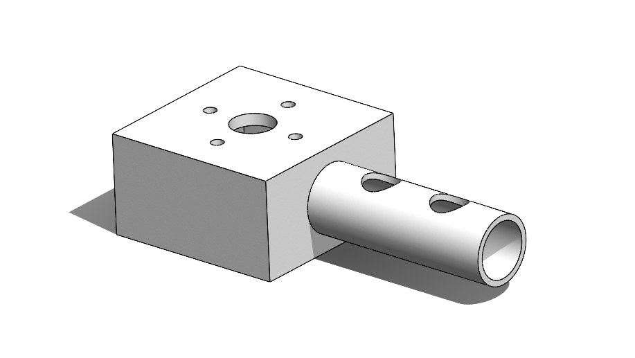

Engineering portfolio · 2026
Muhammet Mert Erdoğan
Mechanical engineer working on design, structural analysis and manufacturing. BSc Mechanical Engineering, thesis MSc in progress at Istanbul University-Cerrahpaşa. Certified SOLIDWORKS Professional (CSWP).
Mechanical Engineer · Design, Analysis and Manufacturing
I design parts, prove them with analysis and think about how they are made.
BSc Mechanical Engineering, thesis MSc in progress. SolidWorks (CSWP), ANSYS Mechanical, four industrial internships. Based in Istanbul, open to relocation.
001Selected work
Three projects, each with the result first and the method underneath. Open "Method and details" for the full story.
Pressure vessel · structural analysis
Shell theory said 11.2. The real head said 3.05.
I calculated the stresses of a pressure vessel by hand, built an ANSYS model of the vessel and its bolted head and showed that the head-flange region, not the shell, sets the safety margin.


Method and details
Pressure vessel · method
Two routes, compared at the right level
- 1 · Hand calculationHoop, axial and von Mises stress, radial growth
- 2 · FEA modelVessel and bolted head, linear static, refined mesh
- 3 · Two-level checkMembrane vs theory, peaks at discontinuities
- 4 · ConsequenceStored energy, TNT equivalent, safety distance
Problem
Shell r = 450 mm, t = 10 mm, head 12 mm, L = 1600 mm, SA-516 Gr.70 (yield 260 MPa), internal pressure 0.597 MPa.
What I did
- Calculated the shell stresses with thin-wall theory: von Mises 23.3 MPa, radial growth 0.051 mm.
- Modelled the vessel and bolted head in ANSYS Mechanical with mesh refinement at the flange and head.
- Compared theory with the shell membrane and read the FEA peaks as bending at discontinuities, instead of forcing one number onto both.
- Extended the study with stored energy (isentropic gas), TNT equivalent and Hopkinson-Cranz blast distances. Article in preparation.
What I would do next
A mesh independence study at the peak and a minimum-constraint support instead of the fixed base.


TEKNOFEST UAV · design and manufacturing
A landing gear 50% under its weight target
For a 7 kg quadcopter I designed a skid landing gear from carbon-fibre tubes and 3D-printed joints, checked it with static FEA and brought it in 50% below the specification weight target.



Method and details
TEKNOFEST UAV · method
Light, stiff and easy to fit
- 1 · Requirements7 kg take-off mass, camera clearance, hard landings
- 2 · Parametric CADSkid legs, T-joints and flanges in SolidWorks
- 3 · Static FEALanding loads on the gear in ANSYS
- 4 · BuildCarbon tubes, FDM joints in PLA, ABS and ASA
Design decisions
- Skid gear instead of arm-mounted legs: out of the camera's view and spreads the landing load over a larger area.
- Carbon-fibre tubes with a 5 mm wall on the legs, thicker than the arms, from a local manufacturer.
- 3D-printed T-joints and angled flanges in ABS for strength-to-weight and easy printing.
- Rubber pads on the skids to soften the landing shock.
- Bolted to the frame like the other parts, for easy assembly.
Skills


Machine learning · quality
Telling steel plate defects apart at 91.3%
I compared seven classifiers on steel plate inspection data and combined the best three into a voting ensemble that identifies the fault type with 91.3% accuracy.


Method and details
Machine learning · method
From raw measurements to a voting ensemble
- 1 · DataUCI Steel Plates Faults, 27 features per plate
- 2 · Preparation80/20 split, scaling, oversampling, Boruta selection
- 3 · Seven modelsFrom logistic regression to XGBoost
- 4 · EnsembleMajority vote of XGBoost, random forest and SVM
What I did
- Cleaned the data, left out the ambiguous "other faults" class and balanced the minority classes by oversampling.
- Selected the informative features with Boruta.
- Compared logistic regression, decision tree, random forest, k-NN, naive Bayes, SVM (5-fold CV for C) and XGBoost.
- Combined XGBoost (91%), random forest (90%) and SVM (88%) by majority vote: 91.3%, precision 0.909, recall 0.891.
What it says about the process
K-scratch, Z-scratch and stains are recognised almost perfectly. The pair the model mixes up most is bumps and pastry. Conveyor length ranks highest, so the model leans on line and plate geometry measurements, and the fault mix differs clearly between the two steel grades.


More work
Formula Student
İÜC Racing Formula Student · powertrain team · 2023 - 2026
Designed the chain guard in SolidWorks and verified its strength with static analysis in ANSYS. Revised the bracket design for a 15% weight reduction.
Internships
- FESTO, 2025: traced mechanical, pneumatic, electrical and software faults in a robotic system and recommissioned it.
- BEKO, manufacturing, 2025: found loss sources at 5 critical assembly stations and proposed 2 improvements.
- Midas Makina, design, 2024: revised SolidWorks models and prepared manufacturing drawings.
- Yılmaz Redüktör, workshop, 2024: machining, heat treatment and gear quality control on site.
Skills
SolidWorks (CSWP), ANSYS Mechanical, AutoCAD, Siemens NX, CATIA, Fusion 360, MATLAB/Simulink, R, MS Excel. Static and modal FEA, topology optimisation, GD&T, design for manufacturability, injection moulding and sheet metal design, root cause analysis, lean manufacturing.
Contact
mmert1erdogan@gmail.com · linkedin.com/in/mmerterdogan · mmerterdogan.github.io
002About
I trust a result once two different routes agree on it, and I want to understand why they disagree when they don't. A design is not finished for me until I know how it will be built.
Four internships took me from a design office (Midas) to a machine shop (Yılmaz Redüktör), an assembly line (BEKO) and on-site troubleshooting (FESTO). I am now doing a thesis MSc in Mechanical Engineering and looking for a team where I can keep learning by building real things.
- Education
- BSc Mechanical Eng., İÜC
- Now
- MSc (Thesis), 2026 -
- Languages
- Turkish · English (C1)
- Based in
- Istanbul, open to relocation
003Experience
Traced mechanical, pneumatic, electrical and software faults in an out-of-service robotic system through root cause analysis and recommissioned it.
Found loss sources at 5 critical assembly line stations through waste and root cause analysis and proposed 2 improvements with R&D and Production.
Revised 3D models of existing parts in SolidWorks and prepared manufacturing drawings to dimensioning and tolerancing standards.
Observed CNC turning, milling, heat treatment and grinding operations and gear quality control on a gearbox production line.
004Skills and education
Design
- SolidWorks CSWP
- AutoCAD
- Siemens NX
- CATIA
- Fusion 360
Analysis
- ANSYS Mechanical
- Static and modal FEA
- Topology optimisation
- MATLAB / Simulink
Manufacturing and data
- Design for manufacturability
- Root cause analysis
- Lean manufacturing
- R, MS Excel
Education
Certifications and leadership
- CSWP - Certified SOLIDWORKS Professional · Oct 2026
- UAV Design and Build Training - TEİ Aviation Engine Schools
- McKinsey & Company Forward Program
- Chair of the Board, İÜC Career Club (300+ members, 8+ events) · 2024-2025